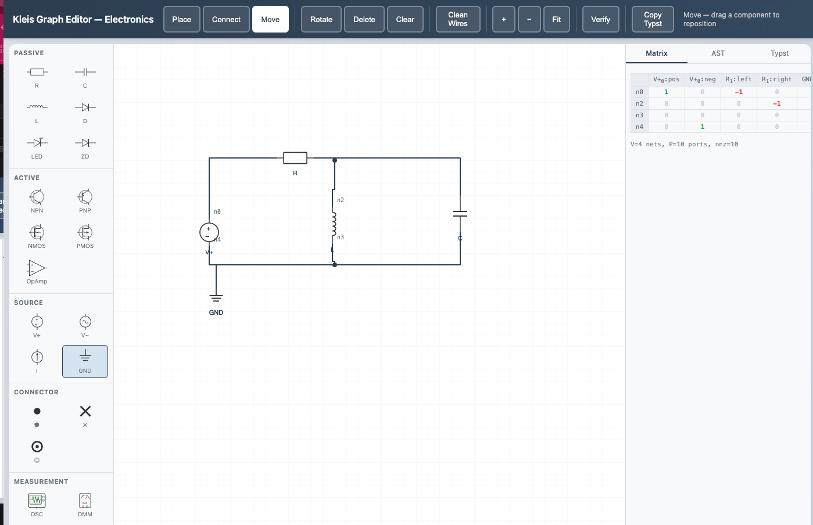
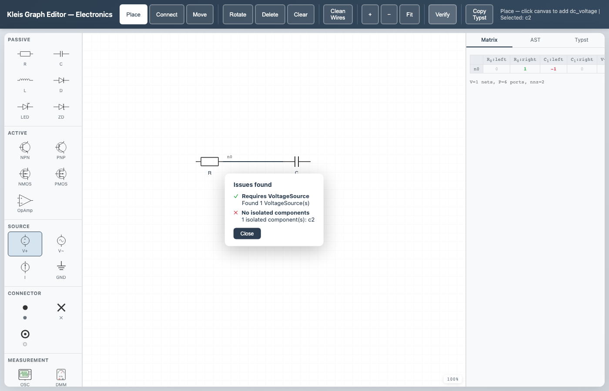
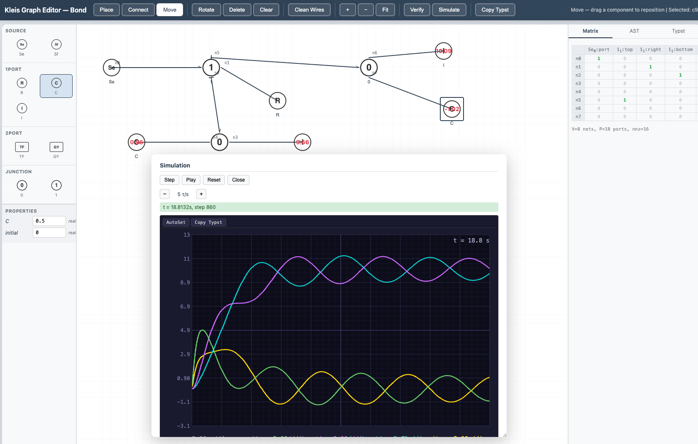

Graph Editor
The Kleis Graph Editor is a visual, browser-based tool for building domain-specific graph schematics. You place typed components from a palette, wire their ports together, and the editor maintains a signed incidence matrix, an AST, and a Typst rendering of the schematic — all updated live. Structural verification (with optional Z3 backing) and time-domain simulation are built in.

The electronics domain showing an astable multivibrator circuit with obstacle-aware routing and wire crossing hops. The palette (left) lists Passive, Active, Source, Connector, and Measurement components. The incidence matrix (right) updates live as components are wired.
Quick Start
Prerequisites
- Kleis compiled and in PATH (see Starting Out)
- A modern web browser (Chrome, Firefox, Safari, Edge)
Launch
Start the server from the Kleis project root:
kleis-server
Then open the Graph Editor at http://localhost:3000/static/graph_editor.html.
To load a specific domain, add a ?domain= query parameter:
http://localhost:3000/static/graph_editor.html?domain=electronics
http://localhost:3000/static/graph_editor.html?domain=bond
http://localhost:3000/static/graph_editor.html?domain=petri
http://localhost:3000/static/graph_editor.html?domain=graph_theory
The domain filter controls which palette sections and domain configuration (routing style, edge decorations, verification rules, simulation mode) are loaded.
Note: The server must be started from the repository root so it can find the
static/,stdlib/, andstd_template_lib/directories.
Domains
The Graph Editor is domain-agnostic. Its behavior is configured entirely by
.kleist template files loaded from the server at startup. Any template whose
metadata includes a ports field becomes a placeable component; templates
whose name starts with __domain_ inject domain-wide configuration without
appearing in the palette.
Domain configuration keys control:
| Key | Effect |
|---|---|
routing_mode | Wire routing: orthogonal (Manhattan bends) or direct (straight lines) |
junction_style | Multi-port junction appearance: dot or none |
multi_port_strategy | How legs fan out from a junction: trunk_branch or star |
edge_decoration | Marker on wire endpoints: none, arrow, half_arrow, inhibitor, causal_bar |
edge_direction | undirected or directed |
verify_* | Structural verification rules (see Verification) |
sim_mode | Simulation mode: discrete or continuous |
Shipped Domains
Kleis ships with four domains:
| Domain | Description | Routing | Decoration | Simulation |
|---|---|---|---|---|
| electronics | Passive and active circuit components | orthogonal | none | continuous (nonlinear MNA) |
| bond_graph | Bond graph modeling (effort/flow) | direct | half_arrow | continuous (linear state-space) |
| petri_net | Petri nets (places, transitions, arcs) | orthogonal | arrow | discrete |
| graph_theory | Generic vertices and edges | direct | none | — |
Each domain is defined by .kleist files in std_template_lib/ and SVG
assets in static/svg/. New domains can be added without modifying Rust code.
Interface Layout
The editor has a three-panel layout with a toolbar header:
┌──────────────────────── Header / Toolbar ────────────────────────┐
│ Place Connect Move │ Rotate Del Clear │ Clean │ + − Fit │ │
│ │ Wires │ Verify Simulate │ │
│ │ │ Copy Typst │ Save SaveAs Load │
├──────────┬───────────────────────────────┬────────────────┤
│ Palette │ │ Output Panel │
│ │ SVG Canvas │ ┌──────────┐ │
│ [Section]│ │ │Matrix│AST│ │
│ ○ Item │ Components + Wires │ │ Typst │ │
│ ○ Item │ │ │ │ │
│ │ │ │ │ │
│──────────│ │ │ │ │
│Properties│ │ │ │ │
│ R: 1000 │ 100% │ │ │ │
└──────────┴───────────────────────────────┴────────────────┘
- Palette (left) — component categories and items, loaded from templates. Below the palette sits the Properties panel for the selected component.
- Canvas (center) — SVG drawing surface with a 20 px grid. Components are placed and wired here. A zoom indicator appears in the bottom-right corner.
- Output Panel (right) — three tabs showing live representations of the graph: Matrix, AST, and Typst.
Modes
The editor has three interaction modes, selectable from the toolbar or by keyboard shortcut. The active mode is highlighted in the toolbar and displayed in the status bar.
Place Mode (P)
- Select a component from the palette (it highlights blue).
- Click anywhere on the canvas to place it.
- The component snaps to the 20 px grid.
Each component renders its SVG symbol and exposes colored port circles on hover. The status bar shows which component type is selected.
Connect Mode (C)
- Click a port circle on one component to start a wire.
- A dashed rubber-band preview follows your cursor.
- Click a port on another component to complete the connection.
The editor creates a net — a set of connected ports that corresponds to a row in the incidence matrix. If you connect a port that already belongs to an existing net, the nets merge into a single hyperedge. This supports multi-way junctions naturally.
Wire routing follows the domain’s routing_mode:
- Orthogonal — Manhattan-style paths with right-angle bends. The preview snaps to horizontal and vertical segments.
- Direct — straight line from port to port.
Move Mode (M)
Click and drag a component to reposition it. Connected wires automatically reroute to follow the component.
Editing
Rotate and Delete
- Rotate (R) — rotates the selected component 90° clockwise.
- Delete (Del / Backspace) — deletes the selected component or wire. Deleting a component also removes all its net connections.
- Clear — removes all components and wires from the canvas.
Wire Editing
In orthogonal routing mode, wires have editable bend points:
- Drag a segment — hover over a horizontal or vertical wire segment (the cursor changes to a resize arrow) and drag to slide the bend.
- Double-click a segment — inserts a new pair of bend points, giving you finer control over the route.
- Double-click a bend dot — simplifies the route by removing redundant bends.
- Clean Wires — toolbar button that recomputes the default route for every wire in the schematic.
Properties Panel
When a component is selected, the Properties panel (below the palette) shows
its editable parameters. These are defined by the template’s params metadata
— for example, a resistor has an R parameter, a capacitor has C.
Changing a parameter value immediately updates the Matrix, AST, and Typst outputs.
Causal Stroke (K)
In the bond graph domain, selecting a wire and pressing K cycles the causal stroke through three states: stroke at the end port, stroke at the start port, and off. Causal strokes appear as bar markers on the wire ends and are included in Typst export and in the causality verification checks.
Navigation
| Action | Input |
|---|---|
| Zoom in/out | Mouse wheel (cursor-centered) |
| Zoom in/out | + / − toolbar buttons |
| Fit to content | Fit toolbar button |
| Pan | Middle-mouse drag |
| Pan | Hold Space + drag (cursor changes to grab hand) |
The current zoom level is displayed as a percentage in the bottom-right corner of the canvas.
Keyboard Shortcuts
| Key | Action |
|---|---|
P | Switch to Place mode |
C | Switch to Connect mode |
M | Switch to Move mode |
R | Rotate selected component 90° |
K | Toggle causal stroke on selected wire |
Delete / Backspace | Delete selected component or wire |
Escape | Cancel current connection / clear selection |
Space (hold) | Pan mode (drag to pan) |
Ctrl+S / Cmd+S | Save graph to current file (or Save As if no file) |
Keyboard shortcuts are disabled while focus is in a text input, textarea, or select element.
Output Panels
The right panel has three tabs that update live as you edit the schematic.
Matrix
Displays the signed incidence matrix as a dense table. Rows are nets, columns are ports. The first connection on a net is marked +1 (green), subsequent connections are −1 (red), and unconnected cells show 0 (grey). The matrix dimensions (nets × ports) are shown above the table.
AST
Shows the JSON representation of the graph as an editor AST node. This is the
graph(...) expression that would be evaluated by the Kleis runtime —
containing the SparseMatrix topology and per-component operation data.
Typst
Generates the Typst source code for the schematic, with placed #image
calls for component symbols and #line calls for wires. Edge decorations
(arrows, causal bars, etc.) are included when the domain specifies them.
The Copy Typst toolbar button copies this output to your clipboard. You
can paste it directly into a .kleis document and compile to PDF.
Verification
The Verify toolbar button runs a two-phase verification:
Phase 1: Structural Checks (Client-Side)
These checks run instantly in the browser. Which checks run depends on the
domain’s verify_* configuration keys:
| Rule | Config Key | Description |
|---|---|---|
| Bipartite structure | verify_bipartite | Arcs must cross between two specified groups (e.g. places and transitions in Petri nets) |
| Exactly one of type | verify_exactly_one | Exactly one component of a given type must exist |
| Requires type | verify_requires_type | At least one component of a given type must exist |
| No isolated components | verify_no_isolated | Every component must be connected to at least one net |
| All connected | verify_all_connected | The graph must be a single connected component (BFS reachability) |
| Causality constraints | verify_causality | Bond graph junction causality rules are satisfied |
Phase 2: Z3 Verification (Server-Side)
If the domain specifies a verify_theory, the editor sends the graph topology
and component data to POST /api/verify_graph. The server loads the named
Kleis theory, encodes the graph constraints, and runs Z3 to check domain
axioms. Results appear as additional pass/fail items in the verification
overlay.
The overlay shows a summary (all checks passed / issues found) with per-rule pass/fail icons. Click Close to dismiss.

The verification overlay reporting “Issues found” — one passing check (Requires VoltageSource) and one failing check (No isolated components).
Simulation
The Simulate toolbar button opens a floating panel for time-domain
simulation. The panel is draggable (via its title bar) and resizable. The
simulation mode is determined by the domain’s sim_mode configuration.
Controls
| Button | Action |
|---|---|
| Step | Advance one simulation step |
| Play / Pause | Toggle continuous playback |
| Reset | Reset state to initial values (runs setup for continuous mode) |
| Close | Close the simulation panel |
| − / + | Decrease / increase playback speed |
The speed indicator shows steps per second (sps) for discrete mode, or time-constants per second (τ/s) for continuous mode with eigenvalue-adaptive stepping.
Discrete Simulation
Used by domains like Petri nets. Each step:
- The server evaluates which components are enabled (e.g., transitions with sufficient tokens). Enabled components pulse with a green outline on the canvas.
- One enabled component fires (round-robin scheduling).
- The state vector updates and the canvas overlay reflects the new state.
Components with
show_state: truedisplay their current value. - A history list logs each step with the fired component name.
If no component is enabled, the simulation reports halted.
Continuous Simulation
Used by domains like electronics and bond graphs. Continuous simulation has a setup phase and a stepping phase:
- Reset sends the graph to
POST /api/simulate_setup, which queries the domain theory for system dimensions (state variable count, input count, initial conditions). For linear domains (bond graphs) it also extracts state-space matrices (A, B) via Z3 probes. The status bar reports the number of state variables, inputs, time step (dt), and the fastest time constant (τ) if available. - Step / Play sends state vectors to
POST /api/simulate_graph. The server calls the theory’ssim_step(i)function for each state variable — the theory owns the integration method. Bond graphs use RK4 on a linear state-space model; electronics uses Newton-Raphson on the full nonlinear MNA system. Each server call integrates a chunk of steps (default 100) and returns the updated state. - An oscilloscope display renders the trajectory as colored traces on a
dark background with grid lines and axis labels. The oscilloscope supports:
- AutoSet — automatically scales time and voltage divisions to fit the visible traces
- Copy Typst — exports the oscilloscope plot as Typst source for inclusion in documents

The bond graph domain running a continuous simulation. The oscilloscope shows colored traces for each state variable over time, with AutoSet and Copy Typst controls. Component state values are overlaid on the canvas.
Save and Load
Graphs can be saved to and loaded from .kleis files. The save format uses
Kleis define statements, making saved files valid Kleis programs that are
human-readable, git-diffable, and hand-editable.
Saving
- Save (toolbar button or
Ctrl+S/Cmd+S) — saves the current graph to its existing file path. If no file has been saved or loaded yet, this behaves as Save As. - Save As — prompts for a filename. The file is saved under
examples/{domain}/graph-editor/{name}.kleis.
The saved file contains the full graph state: component positions, rotations, parameter values, net connections, waypoints, and causal strokes. Simulation state (A/B matrices, token counts) is not saved — it is recomputed when the graph is next simulated.
Loading
- Load — fetches the list of saved graphs for the current domain from the server. Pick a file by number from the list, and the graph is loaded onto the canvas.
On load, the editor clears the current graph, rebuilds all components and nets from the file, auto-routes wires, and fits the view to the loaded content.
File Format
A saved graph is a valid .kleis program:
define graph_domain = "electronics"
define graph_components = [
["c0", "dc_voltage", "VoltageSource", 100, 150, 0, [5.0]],
["c1", "resistor", "Resistor", 300, 150, 0, [1000.0]],
["c2", "ground", "Ground", 100, 400, 0, []]
]
define graph_nets = [
["n0", [["c0", "pos"], ["c1", "left"]], []],
["n1", [["c1", "right"], ["c2", "pin"]], []]
]
Each component entry is [id, template_name, component_type, x, y, rotation, [params...]].
Parameter values follow the order defined in the .kleist template’s params:
metadata. Each net entry is [id, connections, waypoints], where connections
are [componentId, portName] pairs preserving connection order.
Seed Files
Kleis ships with example graphs for each domain that you can load immediately:
| File | Domain | Circuit |
|---|---|---|
examples/electronics/graph-editor/rectifier.kleis | electronics | Half-wave rectifier (DC source, diode, R, C, ground) |
examples/electronics/graph-editor/multivibrator.kleis | electronics | Astable multivibrator (2 BJTs, 4 resistors, 2 capacitors) |
examples/bond-graph/graph-editor/rc_circuit.kleis | bond_graph | RC circuit (effort source, 1-junction, R, C) |
examples/petri-nets/graph-editor/linear.kleis | petri_net | Linear workflow (source, 2 transitions, place, sink) |
Adding New Domains
The Graph Editor’s domain-agnostic architecture means new domains can be created without modifying any Rust code:
- Create
.kleisttemplate files instd_template_lib/with@templateblocks. Each component template needsportsmetadata defining the connection points asname:x,ypairs. - Add a
__domain_*template to configure routing, decorations, verification rules, and simulation mode. - Add SVG assets to
static/svg/<domain>/for component symbols. - Optionally add a theory file (
.kleis) for Z3-backed verification. For simulation, the theory must definesim_step(i)(returns the next value of state variablei),sim_halted(), and setup helpers (sim_state_count,sim_state_map,sim_initial_state, etc.).
The editor discovers the new domain at startup via /api/templates.